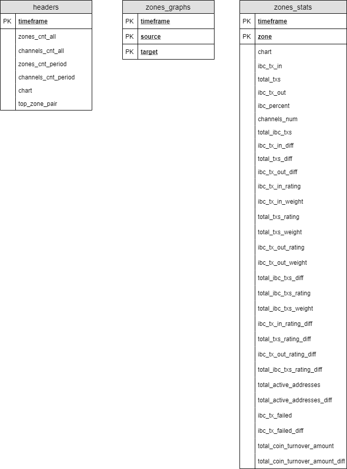
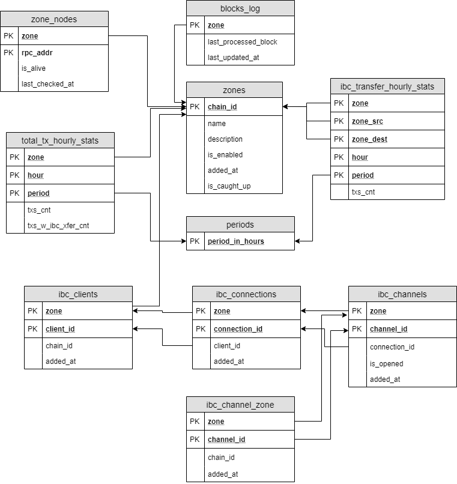
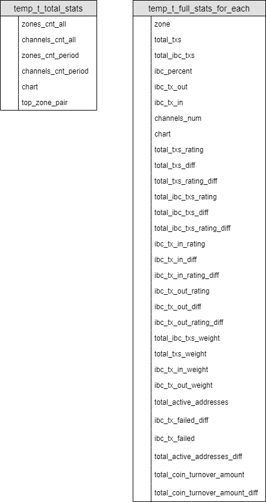

Database
The database is the main part of the solution that stores the state of the solution. The database includes:
Database migrations work using the Hasura GraphQL migrations engine.
Flat tables
Flat tables contain prepared flat data, ready to use, specifically for the front via hasura graphql.

Core tables
The core tables store the state of the main solution logic and primary statistics.

Temporary tables
Temporary tables are used only for the return set (RETURNS SETOF) in PL/pgSQL functions.

Functions
The functions are used to calculate statistics from core tables. The function is called by the statistical adapter.
get_total_stats
get_total_stats(period_in_hours integer, step_in_hours integer)
RETURNS SETOF temp_t_total_stats
Details of the temp_t_total_stats temporary table are here.
get_full_stats_for_each_zone
get_full_stats_for_each_zone(period_in_hours integer, step_in_hours integer)
RETURNS SETOF temp_t_full_stats_for_each
Details of the temp_t_full_stats_for_each temporary table are here.